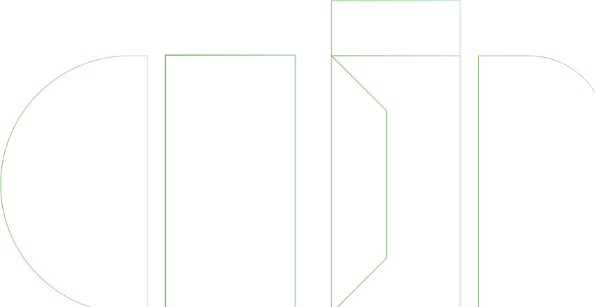
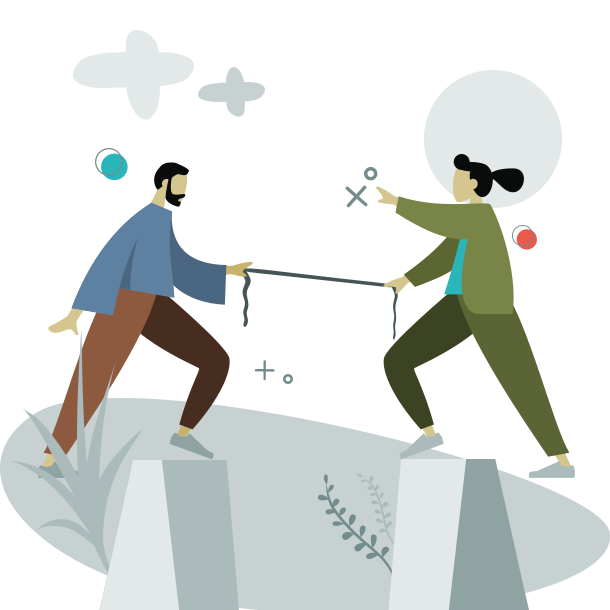
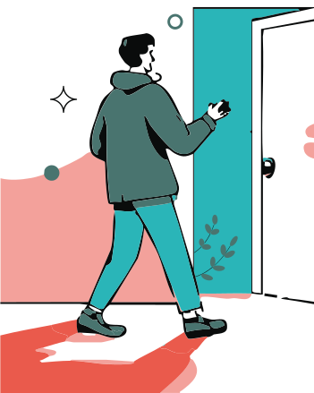
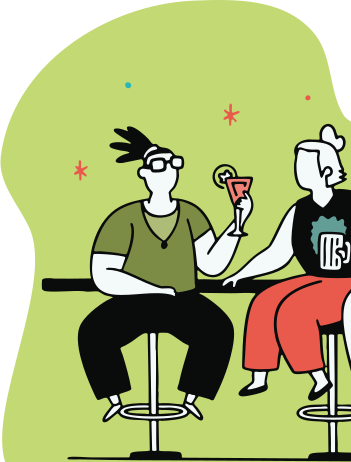
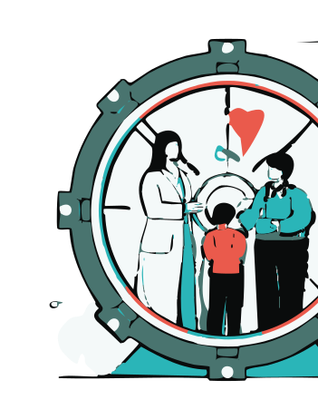
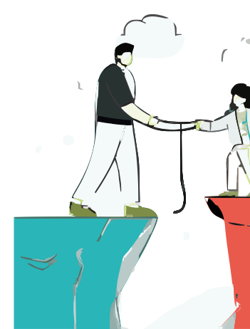

Este artículo está dedicado a madres, padres, hermanos, parejas, amigos... personas que acompañan a quienes tienen una adicción. También ellos necesitan apoyo.


Cuando alguien a quien amas tiene una adicción, toda la familia sufre. Ves a tu ser querido autodestruirse y naturalmente quieres ayudar. Pero en el proceso, es fácil descuidarte a ti misma: la preocupación constante, el estrés, la tristeza y a veces la rabia pueden absorber tu vida por completa. Por eso, este artículo es para ti, familiar o amigo de una persona con adicción. Sí, puedes ser un pilar importante en su recuperación, pero necesitas aprender a ayudar sin hundirte tú.
Infórmate y entiende la enfermedad. Lo primero es reconocer que la adicción es un trastorno complejo, no simplemente falta de fuerza de voluntad. Educarte sobre la adicción te ayudará a quitarte culpas de encima (¡no, no es tu culpa!) y a responder de forma más efectiva. Estudios muestran que la adicción no solo afecta al individuo, sino también a su entorno, y que las familias de personas con trastorno por consumo sufren tasas más altas de depresión, ansiedad y otros problemas de salud. Es decir, es normal que te sientas agotado o abrumado, estás atravesando una situación muy difícil. Hablar con profesionales o participar en grupos para familiares puede darte comprensión y estrategias. En España, por ejemplo, existen asociaciones de Familias Anónimas y grupos de apoyo donde puedes compartir con otros en tu situación.
Pon límites saludables. Amar y apoyar no significa aguantarlo todo ni sacrificar tu bienestar. De hecho, aprender a decir “hasta aquí” con amor puede salvar a ambos. Si tu ser querido te pide dinero para consumir, o intenta manipularte con tal de seguir con la adicción, debes establecer límites firmes. Los expertos aseguran que poner límites claros protege a la familia y evita habilitar la conducta adictiva. No se trata de darle la espalda, sino de no facilitarle seguir consumiendo por ejemplo, pagando deudas, justificando indiscriminadamente, no meter por él/ella en el trabajo, no minimizar el problema. Estos límites, cuando se ponen con un acto de amor, fomentan que la persona logre tomar fondo de forma segura y genere la necesidad de cambio. Al mismo tiempo, te protegen a ti de desgastarte emocionalmente, ese estado en el que la vida del otro te devora. Recuerda: para poder sostener a alguien, primero tienes que estar de pie tú.
Cuídate, porque tú importas. Apoyar a un ser querido no significa olvidarte de ti. Al contrario, entre mejor estés tú emocional y físicamente, mejor podrás ayudarle. Dedica tiempo a tus propias actividades, no dejes de lado tus hobbies, tu trabajo, tus otras relaciones. Busca tu propia terapia si lo consideras necesario. Muchas personas en procesos de recuperación han compartido lo importante que fue contar con psicólogos o en grupos tipo Al-Anon. Está comprobado que cuando las familias reciben apoyo y orientación, el pronóstico de recuperación mejora. Permítete también sentir y expresar tus emociones: es válido estar triste, enojada o incluso enfadada. No tienes que ser fuerte todo el tiempo. Pide ayuda cuando lo necesites, sin culpa. Cuidarte no es ser egoísta, es esencial en este proceso.
Acompañar con empatía, no con control. Tu rol es estar ahí, escuchar, animar a que busque tratamiento y quizás acompañarlo a terapia si te lo piden. No necesitas obligar ni exigir, pero sí puedes inspirarle confianza y brindarle apoyo incondicional, sin juicios. Anima los pequeños logros de tu ser querido en recuperación, valora sus pasos, recuerda que hay lapsos, avances – es normal – pero recuerda que tu apoyo puede marcar la diferencia. La familia, con su presencia segura y amorosa, puede ser un factor crítico de motivación. Eso sí, nunca te olvides de ti en el proceso. Si en algún momento sientes que te estás perdiendo, busca ayuda de inmediato.
No estás sola en esto. En España, cientos de asociaciones y profesionales trabajan con familiares de personas adictas. Compartir tu carga la hace más llevadera. Puedes estar pasando por un sube y baja emocional o un día con cero ánimos, pero eso no define tu camino. Mereces abrazarte a ti misma/o en lo que sientes. Así, en vez de perderte, podrás tenderle la mano y, juntos, caminar hacia la recuperación. Porque la luz al final del túnel no es solo para quien deja la adicción, sino también para quienes caminan a su lado sin perderse en la oscuridad.
Referencias (APA)
Familias Anónimas. (s.f.). Apoyo para familiares de personas con adicciones. https://familiasanonimas.org
Plan Nacional sobre Drogas (PNSD). (2023). Guía para familias: cómo actuar ante una adicción. https://pnss.sanidad.gob.es
Smith J. A., & Phillips, M. E. (2019). Family boundaries and substance use recovery: balancing support and autonomy. Journal of Substance Abuse Treatment, 103, 65–72. https://doi.org/10.1016/j.jsat.2019.05.002
National Public Radio (NPR). (2020, marzo 6). Most people with addiction recovery. They also want you to know it’s not weakness. https://www.npr.org
Blog
En este blog compartimos lo que a nosotros nos habría gustado saber cuando empezamos: información clara, herramientas prácticas y reflexiones honestas que pueden ayudarte, estés donde estés en tu proceso

La adicción a la cocaína puede hacerte sentir atrapado, pero el primer paso hacia el cambio es posible y está a tu alcance. Reconocer que existe un problema es fundamental: no eres débil por admitirlo, al contrario, es un acto de valentía. Seguir leyendo

El alcohol forma parte de nuestra cultura, por eso admitir una adicción al alcohol puede ser tan difícil. Seguir leyendo

La ludopatía (adicción al juego) es una adicción silenciosa que destruye economías familiares, relaciones y la paz en el hogar. Seguir leyendo

Cuando alguien a quien amas tiene una adicción, toda la familia sufre. Ves a tu ser querido autodestruirse y naturalmente quieres ayudar. Seguir leyendo
¡Suscríbete a nuestra newsletter!
Recibe las últimas novedades sobre Addict Help y más.
TESTIMONIOS
Sus palabras nos emocionan, nos definen y nos empujan a seguir. Esto es lo que opinan quienes han conocido el origen de Addict Help
Conozco a los 3 y sé que están haciendo un gran trabajo. Son muy profesionales y seguro que harán todo lo posible para conseguir los objetivos.
He visto su plan para la APP y es algo extraordinario. ¡¡Va a ayudar a muchísima gente!!